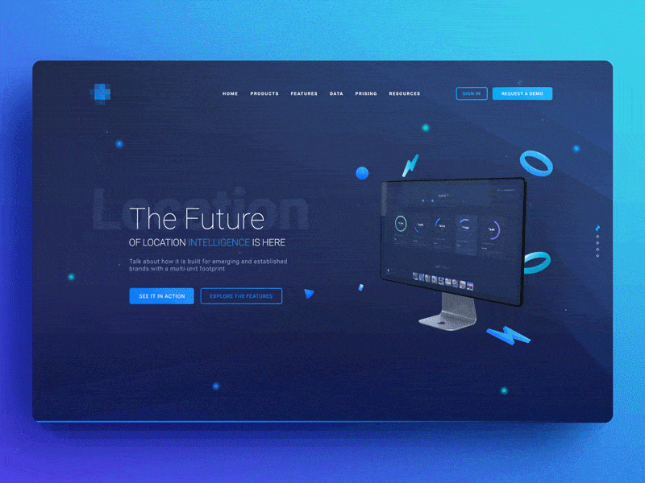

Глоссарий
Web
Веб-дизайн
Веб-сайт
Дизайн
Определение Вeб
- Веб-дизайн — отрасль веб-разработки и разновидность дизайна, в задачи которой входит проектирование пользовательских веб-интерфейсов для сайтов или веб-приложений.Источник
- Веб-(англ. web-паутина)- интернет-пространство. Источник

- Веб-сайт, или веб-сайт (от англ. website: web — «паутина, сеть» и site — «место», буквально «место, сегмент, часть в сети»), также веб-узел, — одна или несколько логически связанных между собой веб-страниц;Источник
Вверх
Определение Web
- Web-связанным между собой документам, расположенным на различных компьютерах, подключенных к Интернету.Источник
- Web-частный случай промышленного дизайна. Вид художественно-проектной деятельности, направленный на создание в обеспечение удобства использования веь-ресурсов.Источник
Вверх
Веб-страницы
- Веб-страница-Отдельный документ в Интернете, содержащий текст, графику, звук и т. п.Источник
- Веб страница-Информационно значимое содержимое веб-страницы обычно называется контентом.Источник
- Веб страница-Несколько веб-страниц, объединённых общей темой и дизайном, а также связанных между собой ссылками, образуют веб-сайт.Источник
Вверх
Дизайн
- Дизайн-проектировать, чертить, задумать, а также проект, план, рисунок) — деятельность по проектированию эстетических свойств промышленных изделий («художественное конструирование»), а также результат этой деятельности (например, в таких словосочетаниях, как «дизайн автомобиля»).Источник
- Дизайн-это совокупность действий человека или группы людей по художественному конструированию всевозможных изделий.Источник
- Дизайн-тзамысел, умысел, план, цель, намерение, творческий замысел, проект, чертеж, расчет, конструкция; эскиз, рисунок, узор, композиция, искусство композиции, произведение искусства; очерчивать, набрасывать, размечать, маркировать, планировать, набрасывать план в уме, цель, сделать предварительный набросок для конструирования чего-либо.Источник
Вверх
| Дизайн — это про баланс красоты, логики и возможностей. Веб-дизайнер должен сделать проект красивым, но это только одна из его задач. В первую очередь он проектировщик и аналитик, который создаёт простые и понятные продукты на основе анализа поведения пользователей.
Под словом «дизайн» сейчас подразумевается скорее не то, как сайт выглядит, а то, как он работает и насколько легко пользователям достичь своей цели. Творчество и искусство в оформлении отошли на второй план. Для задач бизнеса веб-дизайнер работает так, чтобы привлечь внимание посетителя, заинтересовать и донести нужную информацию. |
 |
- Дизайнер получает данные от заказчика — зачем нужен сайт, как он будет работать, какие пользователи будут на него заходить. Хороший вариант, если заказчик точно знает, что нужно. Но так бывает не всегда, поэтому дизайнер должен сам задавать вопросы и получать ответы. Задачу, требования к сайту и ответы на вопросы дизайнер записывает в бриф.
- Веб-дизайнер создаёт наброски или прототипы будущего сайта: на бумаге или в специальных программах. Прототипы больше похожи на схемы, где указывается расположение основных элементов на страницах сайта.
- На основе прототипов дизайнер рисует цветной макет. Тут уже можно работать над сочетаниями цветов, добавлять анимацию.
- Готовый макет дизайнер передаёт заказчику или разработчикам, которые перенесут его на сайт.
|